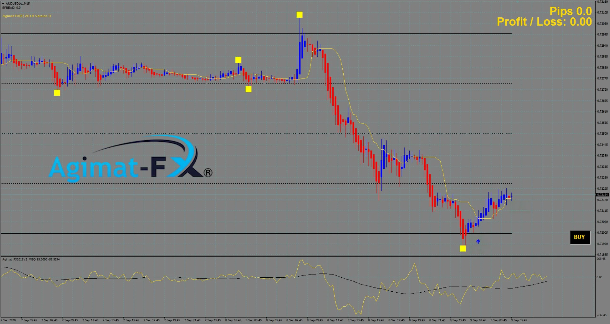
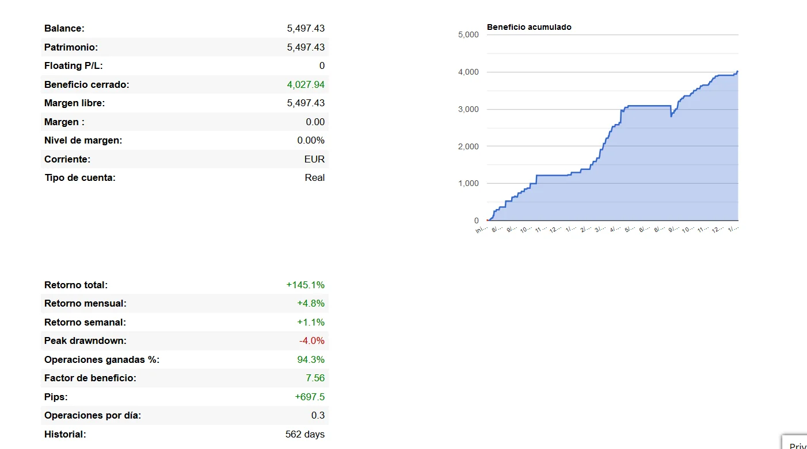
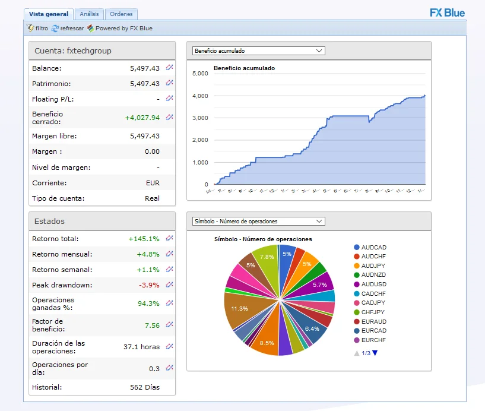

Agimat FX® es un sistema de alto rendimiento de comercio con Forex para MetaTrader 4, MetaTrader 5 y TradingView. Actualmente, Agimat FX® cuenta con distintas herramientas que te pueden ser utiles para ayudar a mejorar tus ingresos.
Agimat FX
Agimat FX® 2018 V2 – Estrategia de opciones binarias y especulacion de divisas.

Agimat FX® 2018 V2 es la version renovada en 2020 del famoso Agimat FX® 2018 lanzado en 2017. Esta segunda version del sistema Agimat FX® 2018 incluye los nuevos indicadores de las Ecuaciones de Maxwell, el cual produce un grafico de predicciones futuras para llevar a cabo mejores movimientos en el mercado. Nuestra primer version de este sistema ha dominado el mercado durante 3 años. Agimat FX® 2018 V2 lo reemplazara y le brindara una mayor precision para entrar en el mercado en marcos de tiempos mas bajos. Esta es la opcion ideal para las opciones binarias.
Agimat FX® Pro EA – Asesor Experto
Agimat FX® Pro EA, es una herramienta que realiza operaciones automaticamente por usted. La diferencia entre una EA (Expert Adivisor) comun y el Agimat EA es la sincronizacion de la red neural con la cual trabaja. Esta herramienta no funciona mediante reglas mecanicas, este hace uso de una fuentes de datos en vivo que la red neuronal le proporciona. A traves de la aplicacion de la inteligencia artificial (IA), la herramienta decide de manera independiente cuando ejecutar una operacion o no, previniendo situaciones peligrosas y/o no adecuadas.

Analisis en tiempo real y extractos de cuentas en vivo con Agimat FX® Pro EA
Agimat FX® Ultra
Agimat FX® Ultra, si no es el mejor, es uno de los mejores indicadores de forex. Esta herramienta nos muestra la entrada, el TP y el SL por adelantado para poder establecer sin problemas la orden que deseemos. Al trabajar con la red neuronal y un centro de datos situados en Hong Kong, permite brindar una precision extremadamente alta para lograr tener un excelente experiencia de negociacion. Agimat FX® Ultra se encuentra disponible en Metatrader 4, Metatrader 5 tanto para iOS como para Android, ademas de contar soporte en TradingView.
Ademas de adquirir esta tan poderosa y util herramienta, tambien obtienes acceso gratuito de copiadora de trades, la cual tiene un 90% de precision y menos de 3.9% de drag down.
Señales de Forex Gratuitas
Copiadora de trades automatizada
- Nuestras operaciones diarias de Scalp Trade se copian a su cuenta.
- Nuestra administracion del dinero se copia a su cuenta.
- 90% de precision.
- Forma segura y estable de hacer crecer su cuenta
- Lo ayudamos con la configuracion de su VPS.
